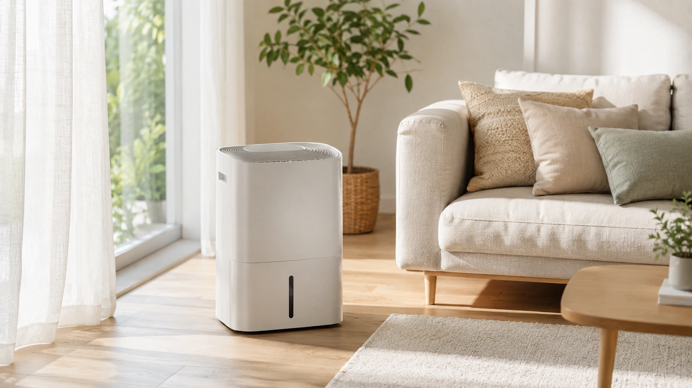

제습기 하루 종일 켜놔도 될까? 전기세는 얼마나 나올까?
제습기는 자동 습도 조절 기능이 있다면 장시간 켜두는 것이 가능하다. 다만 습도를 너무 낮게 만들면 피부·호흡기가 건조해질 수 있으므로 보통 45~60% 정도를 기준으로 맞추는 것이 좋다. 전기세는 소비전력과 사용 시간에 따라 달라지며, 장마철에는 연속 운전보다 목표 습도 설정 운전이 효율적이다.
제습기, 하루 종일 켜놔도 괜찮을까?
결론부터 말하면, 자동 습도 조절 기능이 있는 제습기라면 하루 종일 켜두는 것도 가능하다. 요즘 제습기는 목표 습도에 도달하면 압축기 운전을 줄이거나 멈추고, 습도가 다시 올라가면 재작동하는 방식이 많다.
하지만 “가능하다”와 “항상 좋은 사용법이다”는 다르다. 실내 습도가 이미 낮은데도 계속 강하게 제습하면 공기가 지나치게 건조해질 수 있고, 작은 방에서는 체감 건조감이 더 빨리 올 수 있다.
적정 실내 습도는 몇 %가 좋을까?
일반적인 생활 공간에서는 45~60% 정도를 쾌적한 범위로 본다. 습도가 65% 이상으로 오래 유지되면 빨래 냄새, 곰팡이, 집먼지진드기, 눅눅함이 생기기 쉽다. 반대로 40% 이하로 낮아지면 피부와 목이 건조하게 느껴질 수 있다.
| 습도 범위 | 체감 상태 | 권장 대응 |
|---|---|---|
| 40% 이하 | 건조함을 느끼기 쉬움 | 제습기 중지 또는 약하게 운전 |
| 45~60% | 대부분의 생활 공간에서 쾌적 | 목표 습도 유지 |
| 65% 이상 | 눅눅함, 냄새, 곰팡이 우려 | 제습기 또는 환기 활용 |
제습기 전기세는 얼마나 나올까?
제습기 전기세는 제품의 소비전력, 운전 시간, 전기요금 구간에 따라 달라진다. 간단히 계산하면 아래 공식으로 대략적인 전력 사용량을 볼 수 있다.
예를 들어 소비전력 300W 제습기를 10시간 사용하면 0.3kW × 10시간 = 3kWh를 사용한 것이다. 다만 실제로는 목표 습도에 도달한 뒤 압축기 운전이 줄어들 수 있어, 항상 정격 소비전력만큼 쓰는 것은 아니다.
| 소비전력 예시 | 하루 8시간 사용 | 하루 12시간 사용 | 하루 24시간 사용 |
|---|---|---|---|
| 250W | 약 2kWh | 약 3kWh | 약 6kWh |
| 300W | 약 2.4kWh | 약 3.6kWh | 약 7.2kWh |
| 400W | 약 3.2kWh | 약 4.8kWh | 약 9.6kWh |
전기세가 걱정된다면 “강풍으로 계속”보다 목표 습도를 정해 자동 운전하는 쪽이 좋다. 습도가 안정되면 불필요한 운전을 줄일 수 있기 때문이다.
장마철에는 어떻게 쓰는 게 좋을까?
장마철에는 외부 습도가 높기 때문에 창문을 계속 열어두면 제습 효율이 떨어진다. 제습기를 사용할 때는 가능한 한 창문과 방문을 닫고, 빨래를 말릴 때는 공기 순환이 되도록 선풍기나 서큘레이터를 함께 쓰면 효과가 좋아진다.
효율적인 사용법
- 처음에는 강하게 운전해 습도를 빠르게 낮춘다.
- 목표 습도에 도달하면 자동 또는 약풍 운전으로 전환한다.
- 물통은 자주 비우고, 필터는 주기적으로 청소한다.
- 빨래 건조 시에는 제습기 바람이 직접 닿기보다 공기가 순환되게 둔다.
- 작은 방에서는 문을 닫고 집중 제습하는 것이 효율적이다.
제습기와 에어컨 제습모드, 어떤 게 나을까?
| 구분 | 제습기 | 에어컨 제습모드 |
|---|---|---|
| 주 목적 | 습기 제거 | 냉방 중 습도 감소 |
| 장점 | 빨래 건조, 작은 공간 제습에 유리 | 더운 날 냉방과 함께 사용 가능 |
| 단점 | 실내 온도가 약간 올라갈 수 있음 | 저온 환경에서는 체감이 애매할 수 있음 |
| 추천 상황 | 장마철, 빨래방, 드레스룸, 곰팡이 우려 공간 | 덥고 습한 거실·침실 |
제습기를 계속 켤 때 주의할 점
제습기를 오래 사용할 때는 물통, 배수, 필터, 주변 온도를 함께 봐야 한다. 물통이 가득 차면 자동으로 멈추는 제품이 많지만, 장시간 외출 중 사용한다면 연속 배수 호스 연결이 가능한지 확인하는 것이 좋다.
또한 제습기는 작동 중 열이 발생한다. 밀폐된 작은 방에서 오래 돌리면 실내 온도가 올라갈 수 있으므로, 더위가 심한 날에는 에어컨과 병행하거나 시간대를 나눠 사용하는 편이 좋다.
결론: 하루 종일 켜도 되지만, 목표 습도가 핵심
제습기는 하루 종일 켜둘 수 있지만, 가장 중요한 것은 “얼마나 오래 켜는가”보다 목표 습도를 적절히 맞추는 것이다. 장마철에는 50~55% 정도를 기준으로 자동 운전하고, 습도가 안정되면 약하게 유지하는 방식이 전기세와 쾌적함을 모두 잡는 방법이다.
WORTHPICK 관점에서 제습기는 단순히 습기를 없애는 가전이 아니라, 집안 냄새·곰팡이·빨래 건조 문제를 줄여주는 생활 관리 도구에 가깝다. 사용 환경에 맞춰 똑똑하게 쓰는 것이 가장 좋은 선택이다.
FAQ
제습기를 켜고 자도 되나요?
가능하다. 다만 취침 중에는 목표 습도를 50~60% 정도로 설정하고, 바람이 몸에 직접 닿지 않도록 두는 것이 좋다.
제습기를 켜면 방이 더워지나요?
제습기는 작동 과정에서 열이 발생하기 때문에 작은 방에서는 온도가 약간 올라갈 수 있다. 더운 날에는 에어컨과 함께 사용하거나 짧게 집중 제습하는 것이 좋다.
빨래 말릴 때 제습기만 켜면 충분한가요?
제습기만으로도 효과가 있지만, 선풍기나 서큘레이터로 공기를 순환시키면 건조 속도가 더 빨라질 수 있다.
제습기 물은 재사용해도 되나요?
제습기 물통에 모인 물은 공기 중 수분이 응축된 것이지만 먼지나 세균이 섞일 수 있으므로 식물 물주기나 청소용으로도 신중하게 사용하는 편이 좋다. 마시는 용도로는 적합하지 않다.